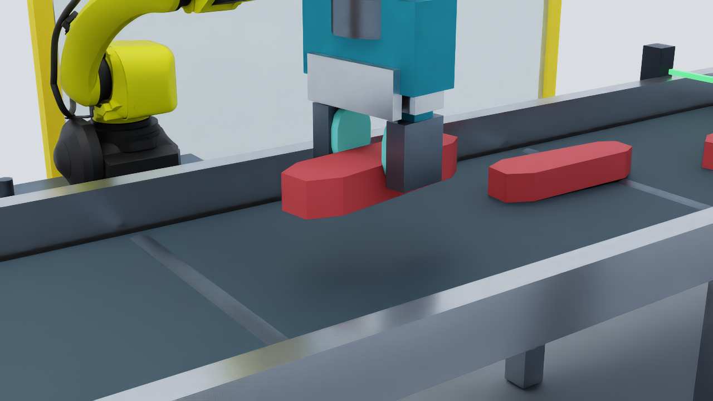
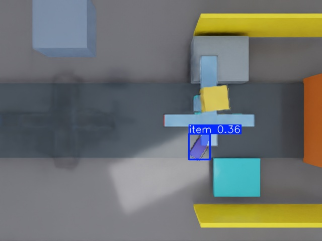
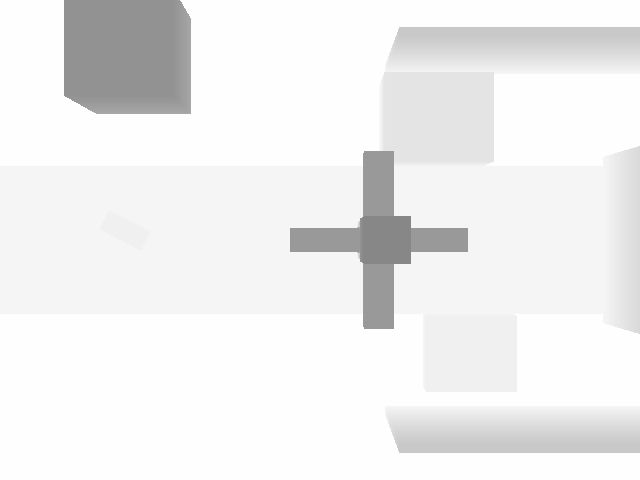
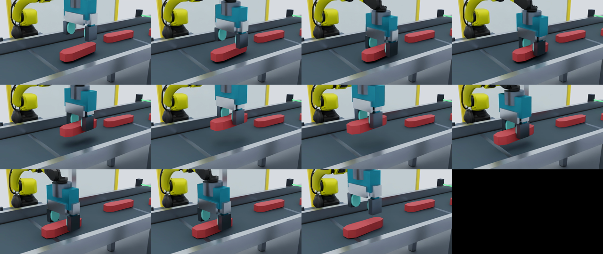

Isaac Sim robotics project
Intercept. Align. Deliver.
A simulation reference cell for timed perception, contact-aware handling, and verified cutter-tray delivery.

Isaac Sim6.0.1
Physics240 Hz fixed step
VisionYOLO26 segmentation
Delivery targetStationary cutter tray
Validation137 passed, 1 skipped
The task is simple to say and hard to time.
Pieces of beef, pork, or chicken arrive on a moving conveyor. The cell must find each piece from camera images, estimate where it will be, intercept it without damaging it, and release it into a stationary tray at the cutter entrance.
The robot is not cutting the product. It presents a known pose to the cutter. The simulated PLC decides when the downstream machine is ready. If perception, grasping, timing, or machine readiness fails, the cell must stop safely, retry, or reject the piece.
See what each subsystem sees.
These are saved outputs from executed Isaac Sim runs. They are not diagram-only placeholders.

YOLO26 returns a product mask, bounding region, class, and confidence. Depth and calibration convert pixels into a belt-plane pose.

The moving workpiece and robot are rendered from the calibrated overhead camera at 640 by 480 pixels.

Aligned depth gives surface height and supports pose recovery. The raw metric array is also saved as NumPy data.

The compact tool approaches vertically, closes on the visible workpiece, lifts through contact, transports it, opens, and retracts.
The visible YOLO result belongs to the complete Scene 1 pipeline. The FANUC view belongs to Scene 2, where articulation, ROS 2, RGBD, and the gripper are validated separately while the final end-to-end bridge remains in progress.
A real pickup, shown without a hidden cut.
This 13.42 second fixed-camera recording begins with the workpiece visible on the stationary belt. The open jaws descend, make bilateral contact, lift the same rigid body, move it 200 mm, release it, and retract.
- Clearance
- 66.2 mm minimum
- Lift
- 159.7 mm
- Retention drift
- 0.39 mm
- Continuity
- Zero workpiece teleports
Boundary: this proves a stationary-belt physics pickup with a kinematic belt fixture released after bilateral contact. It does not yet prove a moving conveyor interception or cutter delivery. The gripper and workpiece remain uncalibrated reference models.
One closed loop, with clear boundaries.
Each block accepts a typed message, performs one job, and returns evidence that the next block can verify.
The loop closes through simulation state.
Robot motion changes the camera image. Conveyor physics changes the future intercept. Finger contact changes the grasp state. PLC readiness changes whether the robot may feed the cutter tray.
The system, part by part.
USD cell
Conveyor, product rigid bodies, robot base, arm, jaws, cameras, guards, reject area, buffer, cutter reference, and named frames.
- Input
- Scene configuration and seed
- Output
- Saved and reloadable USDA stage
Rendered sensing
Overhead and presentation cameras provide RGB, depth, intrinsic calibration, and camera-to-world transforms.
- Input
- Stage geometry, lighting, simulation time
- Output
- Timestamped RGBD and CameraInfo
Vision model
A replaceable interface supports YOLO26 segmentation as the learned baseline and a color model for deterministic test isolation.
- Input
- Rendered RGB image
- Output
- Mask, class, confidence, pixel region
Pose and tracking
Depth and calibration recover planar position and yaw. Timestamped observations form stable tracks with velocity and uncertainty.
- Input
- Mask, depth, calibration, exposure time
- Output
- Track ID, pose, velocity, covariance
Interception
The predictor propagates the moving track to a feasible grasp window. The planner rejects stale or unreachable targets before commit.
- Input
- Track, belt speed, robot state
- Output
- Intercept pose, time, validity window
Robot controller
Preflight checks position, velocity, acceleration, work envelope, and exclusion geometry before sending fixed-step joint commands.
- Input
- Timed plan and measured joints
- Output
- Articulation actions and command evidence
Compliant grasp
Force-limited jaw drives provide an elastic deflection proxy. Bilateral PhysX contact confirms capture. Slip or loss causes correction or recovery.
- Input
- Finger targets, contact, joint effort
- Output
- Grasp state, force proxy, slip estimate
PLC and evidence
Machine-style I/O gates conveyor motion and cutter access. Every cycle writes state transitions, faults, outcomes, metrics, and replay data.
- Input
- Permissives, recipe, cutter phase, faults
- Output
- Acknowledgment, trace, metrics, terminal path
The controller runs a visible state machine.
- ObserveRender RGBD
- AcquireSegment product
- TrackEstimate velocity
- PredictFind future pose
- ReserveCheck robot and PLC
- ApproachPre-shape jaws
- InterceptMatch belt speed
- ConfirmRequire two contacts
- AlignUse cut_target_frame
- ReleasePlace in tray
- VerifyCheck pose and time
- RetractReturn safe
Any state can branch to a known recovery path for failed grasp, stale observation, cutter unavailability, buffer timeout, slip, or emergency stop.
Two handling strategies share the same core.
Solution ADirect transfer
Intercept on the moving conveyor, confirm the grasp, move directly to the cutter tray, align, release, verify, and retract.
- Lowest cycle complexity
- Requires downstream readiness before commitment
- Rejects when cutter access cannot be guaranteed
Solution BBuffered re-observation
Intercept, place on a stationary centering buffer, observe again, estimate slip, regrasp, align, and feed the cutter tray.
- Decouples pickup timing from cutter readiness
- Adds a second visual measurement
- Corrects measured buffer slip before feed
Control runs on measured state, not animation.
The fixed-step clock advances physics at 0.0041667 seconds. Joint targets are sampled from quintic trajectories. The controller checks limits before dispatch and records commanded and measured motion.
During interception, the tool follows the predicted product pose and matches conveyor speed at contact. During closure, both finger sensors must report recent contact. A failed contact confirmation cannot become a successful grasp.

Compliance is modeled as a bounded mechanism.
The rebuilt Scene 2 tool has an enclosed drive housing, two guided carriages, broad rounded pads, force-limited drives, elastic deflection, and contact sensors on both jaws. It is a useful control proxy for jaw compliance. It is not a deformable meat model or a pressure validation.
- Elastic deflection
- 10.23 mm / 10.15 mm
- Force proxy
- 63.91 N / 63.42 N
- Peak contact
- 63.51 N / 64.57 N
- Measured hold slip
- 0.0 m
Inputs and outputs are explicit.
Inputs to the cell
- Rendered RGB and metric depth
- Camera intrinsics and calibrated transforms
- Conveyor speed and fixed simulation time
- Product recipe, dimensions, mass, and compliance proxy
- Measured robot joints and finger contacts
- Cutter ready, phase, permissive, fault, and emergency stop
Outputs from the cell
- Instance mask, confidence, product pose, and class
- Track identity, velocity, covariance, and predicted intercept
- Time-parameterized joint commands and gripper targets
- Grasp confirmation, force proxy, slip, and loss state
- Feed request, result acknowledgment, fault, and recovery state
- USDA stage, images, depth arrays, JSONL traces, metrics, and video
| Message | Key fields | Producer | Consumer |
|---|---|---|---|
| ObjectObservation | mask, pose, confidence, exposure time | Vision adapter | Tracker |
| ObjectTrack | track ID, pose, velocity, covariance | Tracker | Predictor |
| InterceptionPlan | pose, contact time, commit time, validity | Planner | Supervisor and motion |
| GraspState | left contact, right contact, force proxy, slip | Gripper adapter | Supervisor |
| CutterState | ready, phase, permissive, fault, emergency stop | PLC model | Supervisor |
| CellResult | terminal path, errors, violations, timestamps | Evaluator | Logs and replay gate |
What the latest complete suite proved.
Fresh evidence root: results/full_suite/20260827_020951506. The suite ran both architectures, failure paths, artifact checks, Scene 2 validation, and deterministic replay.
Solution A
4 cycles- Nominal deliveries
- 2 of 2 passed
- Position error p95
- 47.34 mm
- Angle error p95
- 0.0242 rad
- Perception latency p95
- 32.33 ms
- Recovery coverage
- failed grasp, cutter unavailable
Solution B
4 cycles- Nominal deliveries
- 2 of 2 passed
- Position error p95
- 49.90 mm
- Angle error p95
- 0.0531 rad
- Perception latency p95
- 32.33 ms
- Recovery coverage
- failed grasp, buffer timeout
The forced failure cycles are expected test cases, so the raw complete-cycle success rate is not a production yield estimate. Accuracy is simulation-only and has not been tuned against real product or hardware.
What is complete, and what is not.
Complete vertical slice
Scene 1 runs rendered camera input through replaceable vision, tracking, prediction, timed interception, contact-confirmed grasping, alignment, delivery, PLC I/O, recovery, metrics, and replay for A and B.
Validated standard-arm foundation
Scene 2 loads the FANUC M-10iD/12 official-description reference, drives six joints and two jaws, publishes ROS 2 RGBD and joint data, validates command order, and measures contact compliance.
Active integration gap
The complete YOLO, prediction, IK, timed interception, and delivery loop has not yet been moved from the generic Scene 1 articulation onto the FANUC Scene 2 arm. This is ticket T016.
Simulation assumptions are part of the result.
This project proves software integration and repeatable simulated behavior. It does not prove production performance.
- Product geometry is a rigid or parameterized reference, not measured deformable tissue.
- Friction, compliance, grip force, and slip thresholds need bench data.
- The FANUC asset is an official-description reference, not an OEM-certified digital twin.
- The gripper, conveyor, cutter, guarding, and trays are project reference models.
- YOLO26 was trained on synthetic Isaac imagery and needs real annotated data.
- No food-safety, hygienic-design, machine-safety, or real-cell risk validation is claimed.
Run the evidence from one command.
All commands run from the repository root. Isaac Sim lives at C:\Users\jainl\is6. Each launcher closes its simulator process after completion.
Validate setup
.\validate_setup.ps1Solution A
.\run_yolo_solution_a.ps1Solution B
.\run_yolo_solution_b.ps1Standard arm scene
.\run_scene2.ps1Complete suite
.\run_tests.ps1{kind=link}